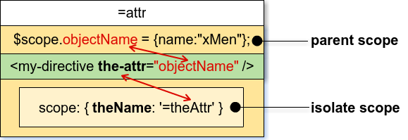

Cách tạo Custom Directive (tiếp theo)
replace
Replace nhận giá trị kỉểu boolean, mặc định là false.
- True: <span class="red">Thay thế</span> DOM element khai báo directive bằng nội dung của directive tương ứng, bao gồm nội dung bên trong template và dữ liệu.
- False: <span class="red">Đưa nội dung</span> của directive (bao gồm nội dung bên trong template và dữ liệu) <span class="red">vào bên trong</span> DOM element khai báo directive đó.
VD:
1 | var myApp = angular.module('demoModule', []); |
Khai báo sử dụng
1 | <span class="red"><p</span> demo-replace <span class="red">></p></span> |
Kết quả
1 | <span class="red"><h3</span> demo-replace <span class="red">>This is directive1</h3></span> |
scope
Trước hết các bạn cần hiểu về khái niệm scope trong AngularJS.
Mặc định thì directive sẽ lấy scope cha bên ngoài, nhưng trong một số truờng hợp chúng ta muốn directive khai báo thêm các thuộc tính và function khác chỉ sử dụng bên trong nội bộ directive, mà lại không làm ảnh huởng đến scope cha bên ngoài thì có 2 lựa chọn:
- A child scope: scope này thừa kế từ scope cha bên ngoài, và có thể khai báo thêm các property, function khác chỉ sử dụng đuợc bên trong directive đó.
- An isolated scope: là một scope riêng mới, không thừa kế gì từ scope bên ngoài, chỉ tồn tại mỗi mình nó.
Phần bên dưới sẽ giải thích về sự khác nhau giữa child scope và isolate scope trong Directives.
Child scope
Khai báo sử dụng child scope: scope: true
Ở phần demo trên, khi bạn thay đổi giá trị ở textBox Parent scope thì giá trị ở textBox Child scope cũng thay đổi theo, đó là do directive đã khai báo sử dụng child scope (scope: true) nên scope này thừa kế từ scope cha. Mỗi một thay đổi trên thuộc tính thừa kế từ scope cha, thì thuộc tính đó cũng được ánh xạ trên child scope thừa kế và ngược lại cũng vậy.
Riêng thuộc tính được khai báo thêm bên trong child scope thì scope cha không thể truy cập được. Như ở ví dụ trên thì dòng chữ “This text is the specific property of the child scope” là giá trị của thuộc tính được khai báo thêm bên trong child scope thừa kế từ scope cha, nên scope cha không thể truy cập được.
Isolate scope
Khai báo sử dụng isolate scope: scope: {}
Khi khai báo scope: {} thì directive đó sẽ có scope riêng biệt bên trong nó để sử dụng. Mọi sự thay đổi của scope cha bên ngoài sẽ không ảnh hưởng gì đến isolate scope bên trong và ngược lại.
Tương tự như phần demo của child scope, nhưng bây giờ khi bạn thay đổi giá trị ở textBox Parent scope thì giá trị ở textBox Isolate scope không hề thay đổi theo, và ngược lại cũng vậy. Đó là do directive đã khai báo sử dụng isolute scope (scope: {}) nên scope này không thừa kế gì từ scope cha. Mỗi một thay đổi trên scope cha đều không hề ảnh hưởng đến isolute scope và ngược lại cũng vậy. Scope cha không thể truy cập vào isolate scope.
Sử dụng isolate scope cho truờng hợp khi chúng ta tạo một custom directive, và muốn tái sử dụng directive đó. Nhưng sử dụng isolate scope không có nghĩa là không truy cập được vào scope cha bên ngoài. AngularJS cung cấp 3 kiểu khai báo cho thuộc tính isolate scope bên trong để có thể nhận các giá trị của scope cha bên ngoài.
1. Khai báo ‘@’ hay ‘@attr’
Nếu chỉ khai báo ‘@’ cho tên thuộc tính đại diện trong isolate scope, thì Angular sẽ tự hiểu tên thuộc tính đại diện cùng tên với thuộc tính khai báo ở DOM element, nhận giá trị từ thuộc tính của scope cha. Như hình mô tả bên dưới, các bạn có thể thấy tên thuộc tính đại diện “theName” trong isolate scope khai báo ‘@’ cùng tên với thuộc tính khai báo “the-name” ở DOM element
Nếu khai báo ‘@theAttr’ cho thuộc tính đại diện trong isolate scope, thì Angular sẽ hiểu thuộc tính đại diện chỉ nhận vào giá trị của một thuộc tính khai báo cụ thể ở DOM element, nhận giá trị từ thuộc tính của scope cha. Như hình mô tả bên dưới, các bạn có thể thấy thuộc tính đại diện “theName” trong isolate scope khai báo ‘@theAttr’ cùng tên với thuộc tính khai báo “the-attr” ở DOM element
Như vậy, điểm khác của khai báo ‘@attr’ với ‘@’ là muốn tách bạch tên thuộc tính đại diện với tên thuộc tính khai báo ở DOM element, việc sử dụng các thuộc tính của parent scope sẽ không bị phụ thuộc vào tên khai báo, mà chỉ thông qua các tên đại diện.
Các bạn hãy nhìn vào những mũi tên trong hình mô tả khai báo ‘@’ và ‘@attr’ bên trên, chúng đều chỉ có một chiều từ parent scope đi xuống isolate scope. Như vậy, điều quan trọng nhất khi sử dụng kiểu thuộc tính khai báo ‘@’ và ‘@attr’ đó là, mỗi một thay đổi ở parent scope thì sẽ làm ảnh hưởng đến giá trị nhận vào ở isolate scope, nhưng sự thay đổi ở isolate scope thì không hề ảnh hưởng đến parent scope (one way binding).
Khai báo ‘@’ và ‘@attr’ chỉ nhận vào giá trị kiểu string.
2. Khai báo ‘=’ hay ‘=attr’
Sử dụng tương tự như khai báo ’@’ và ‘@attr’ đã được gỉải thích ở trên, điều khác biệt là mỗi một thay đổi ở parent scope thì sẽ làm ảnh hưởng đến giá trị nhận vào ở isolate scope, và ngược lại cũng vậy, mọi thay đổi trên giá trị nhận vào ở isolate scope cũng ảnh hưởng đến parent scope (two way binding).

Khai báo ‘=’ và ‘=attr’ nhận vào giá trị kiểu object. Vì khai báo ‘=’ có tính đồng bộ nên không thể truyền vào một thuộc tính của một object, mà phải truyền vào cả object.
3. Khai báo ‘&’ và ‘&attr’:
Sử dụng tương tự như khai báo ’@’ và ‘@attr’ đã được gỉải thích ở trên, nhưng khai báo ‘&’ này dùng để gọi một function được khai báo ở parent scope vào sử dụng bên trong directive.